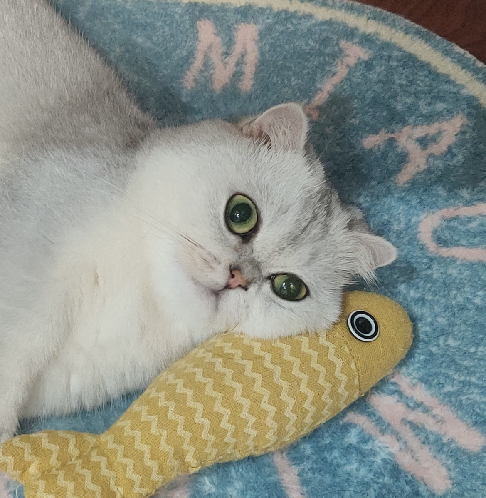

以暂停实验室为对标对象，拆解心理类产品的增长逻辑——信任传递而非流量拦截。
"用户不会因为看到一条广告就决定'试一下心理服务'——
决策门槛太高，信任成本太高。"

心理类产品的增长和消费品或工具类产品有本质区别，核心是提高用户转化率而非纯曝光量。
受过良好教育、愿意为自我成长和情绪体验买单的青年群体——决策理性，对专业性的要求极高。
专业心理治疗背景、效果实验数据、价格优势（对比一对一咨询），结合心理领域热点话题如CPTSD。
提高客户转化率——内容驱动+合作分成，不依赖买量，找到用户真正有反应的内容表达方式。
用五年时间做到3.5万付费用户、42%续费率、68%完成率——一个值得深入拆解的增长范本。
主创团队均来自心理专业，以专业心理干预方法为设计前提，效果经三个研究实验系统检验。
面向普通用户而非企业客户，已验证了心理产品在C端市场的可行性和可持续性。
不同于传统心理企业的培训和咨询模式，打造了真实、可复制的心理产品服务流程。
从获客到裂变，拆解暂停实验室的增长飞轮如何运转。
暂停实验室的用户画像是清晰的：有情绪困扰但不到疾病程度、愿意为心理改善付费、但对一对一咨询的成本或可得性有顾虑的普通人。
这群人的特点是：已经意识到自己有情绪问题（有自我认知）、尝试过自助但觉得效果有限、被"专业"吸引。
定价上采用单次付费模式，新人优惠200元。相比一对一咨询（通常300-800元/次），价格门槛显著更低。用户的心理账本是："花几百块试一下，损失可控"。
产品设计上，25天一个周期、每天10-20分钟，降低"坚持"的负担。68%完成率和42%续费率说明设计有效。
暂停实验室的裂变不是靠"分享得红包"，而是靠真实的用户效果和身份认同。80%用户报告困扰有所缓解——这种变化用户自己能感受到，也愿意跟朋友说。
"我在用暂停实验室"暗示"我在认真对待自己的心理健康"——这是一种值得分享的自我标签。
以公众号和微信群为主。发布科普内容和产品信息，群内用户交流和答疑。创始人和主创团队持续通过播客、B站输出专业内容。
一次内容生产可以反复触达不同渠道的用户，边际成本递减。社群运营专业且及时。
让内容出现在目标用户信任的渠道里，比追求阅读量更有效。找到信任的信源，以"被推荐"的方式出现。
有效果→愿意续费→续费后继续受益→更愿意推荐给别人。这是一个自然的正循环。
"信任的人推荐→产生兴趣→尝试→有效→推荐给下一个"——信任传递的闭环。
一次产出、多平台分发、持续积累。创始人亲自输出内容，比外包写稿更能建立信任。
从暂停实验室的实践中提炼出可复用的增长逻辑，供早期心理产品对标参考。
| 增长环节 | 暂停实验室的做法 | 可迁移的逻辑 |
|---|---|---|
| Acquisition 获客 | 播客推荐、专家推荐、B站UP主推荐 | 找到目标用户信任的信源，以"被推荐"的方式出现，而非自建流量 |
| Conversion 转化 | 单次付费+新人优惠，降低尝试门槛 | 首次付费门槛要低，让用户"试一下"的心理成本可控 |
| Referral 裂变 | 用户因真实效果和身份认同而自然推荐 | 裂变的前提是"效果可感知"——同时可设计利于分享的海报 |
| Content 内容 | 公众号+播客+B站+小红书多平台分发 | 一次产出、多平台分发，创始人/主创亲自输出建立信任 |
用户愿意付费、愿意续费、愿意推荐，都是建立在"真的有用"之上的。68%的完成率和42%的续费率不是运营技巧能换来的，是产品设计本身在起作用。
暂停实验室的用户来自播客推荐、专家推荐、朋友推荐——这些都是信任链条的延伸。对于没有投放预算的早期团队，找到目标用户信任的信源、以"被推荐"的方式出现，比自己做内容引流更高效。